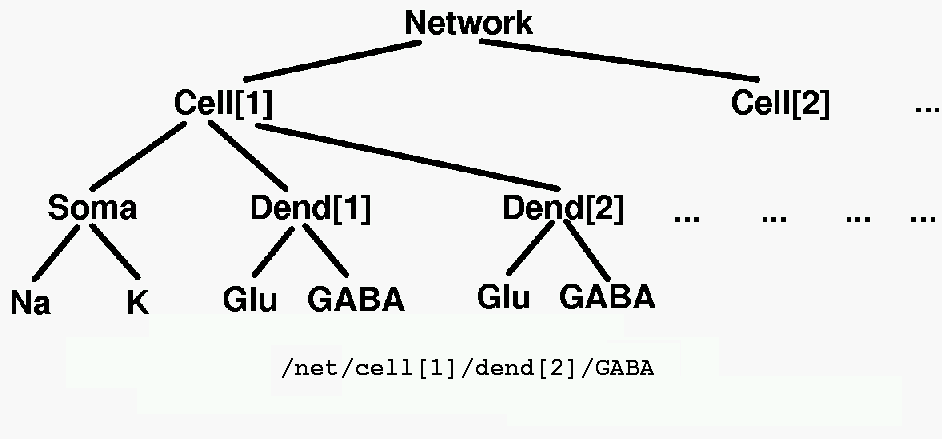
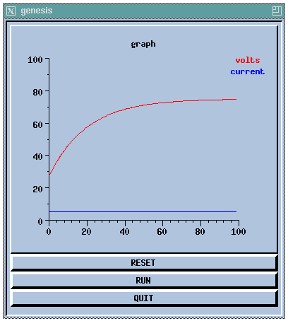

Next: A Basic Tutorial on GENESIS Previous: Introduction Up: Table of Contents
The building blocks used to create simulations under GENESIS are referred to as "elements". Elements are created from templates called "objects". This terminology can be somewhat confusing, because a GENESIS object is similar to what object-oriented languages such as Java or C++ call a "class", and a GENESIS element corresponds to an "object" in these languages. In GENESIS, elements are created as instantiations of a particular object.
Simulations are constructed from these modules that receive inputs, perform calculations on them, and then generate outputs. Model neurons are constructed from these basic components, such as compartments. and variable conductance ion channels.
The various elements in a GENESIS simulation are organized in a tree like the one shown below, and are referenced with a notation similar to that used in UNIX directory trees. Thus, "/net/cell[1]/dend[2]/GABA" might refer to an inhibitory synaptically activated conductance residing in the dendrite compartment 2 of cell 1 of a network.

These objects communicate by passing messages to each other, and each contain the knowledge of their own variables (fields) and the methods (actions) that they use to perform their duties during a simulation. For example, during a simulation step, the PROCESS action will be carried for each type of object in its own way. If it is a voltage activated channel, this means carrying out a step in the numerical solution of the Hodgkin-Huxley equations for the conductance. If it is a graph object, this would mean plotting a point with data from any messages that it receives from other objects.
The use of the GENESIS scripting language can best be illustrated with a simple example like the script from genesis/Scripts/tutorials/tutorial1.g:
//genesis script for a simple compartment simulation (Tutorial #1) // create a parent element create neutral /cell // create an instance of the compartment object create compartment /cell/soma // set some internal fields setfield /cell/soma Rm 10 Cm 2 Em 25 inject 5 // create and display a graph inside a form create xform /data create xgraph /data/voltage xshow /data // set up a message (PLOT Vm) to the graph addmsg /cell/soma /data/voltage PLOT Vm *volts *red addmsg /cell/soma /data/voltage PLOT inject *current *blue // make some buttons to execute simulation commands create xbutton /data/RESET -script reset create xbutton /data/RUN -script "step 100" create xbutton /data/QUIT -script quit check // perform a consistency check for each element reset // initialize each element before starting the simulation
This would produce the display:

Unless you have some previous experience with GENESIS (or are very impatient), you should quickly run through the updated web version of Matt Wilson's original Basic tutorial on using GENESIS. This gives an introduction to the most common GENESIS commands for creating, interacting with, and debugging GENESIS simulations on the command line, and leads you through the steps of creating the tutorial1.g script. (This tutorial was later expanded to become Chapter 12 of the BoG.)